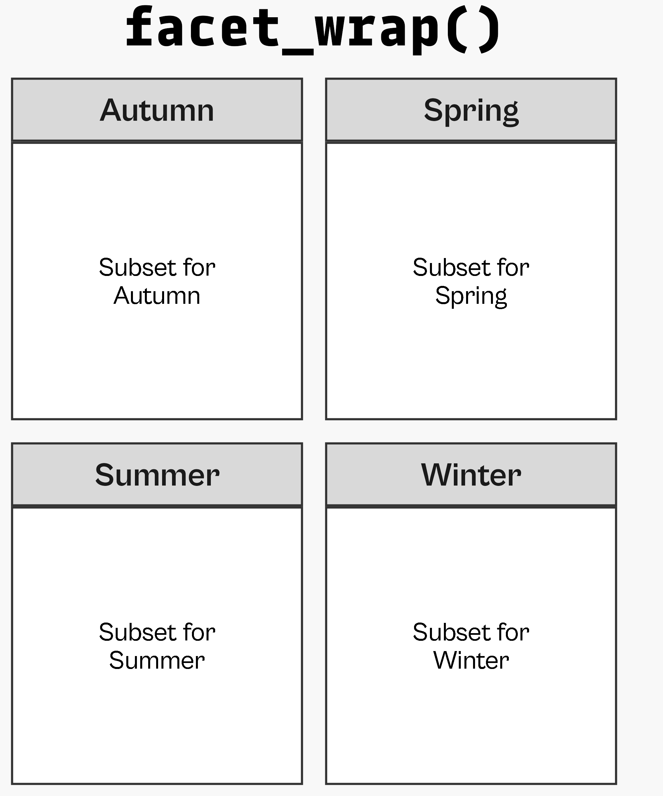
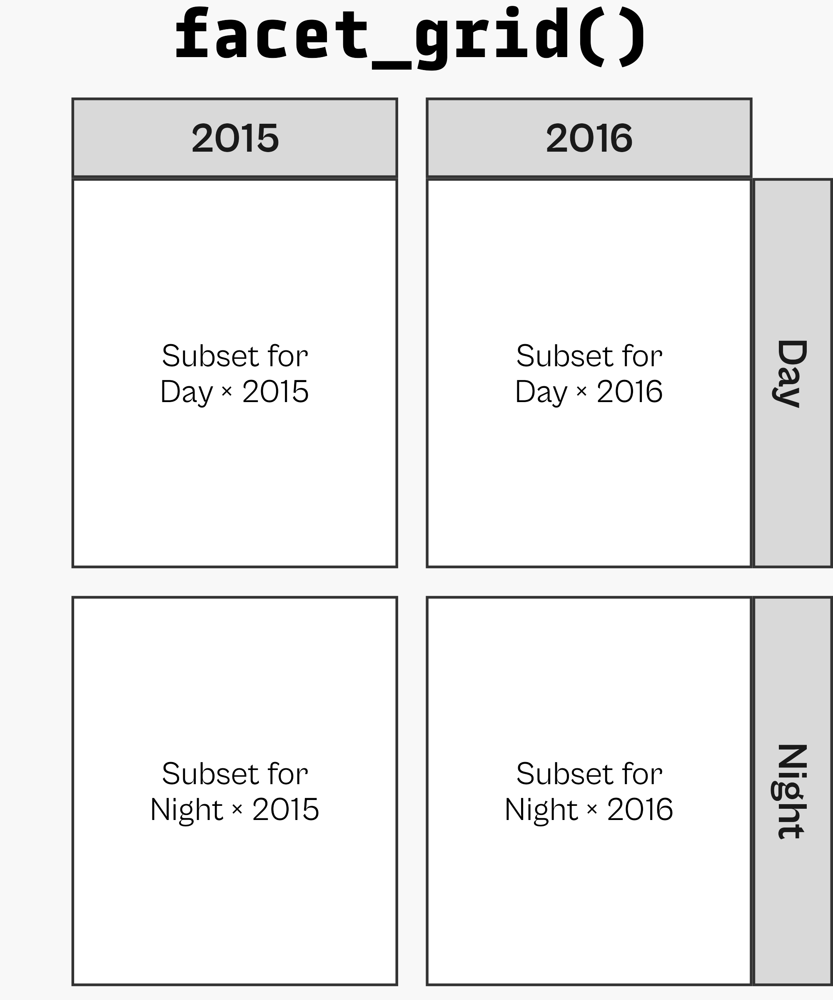
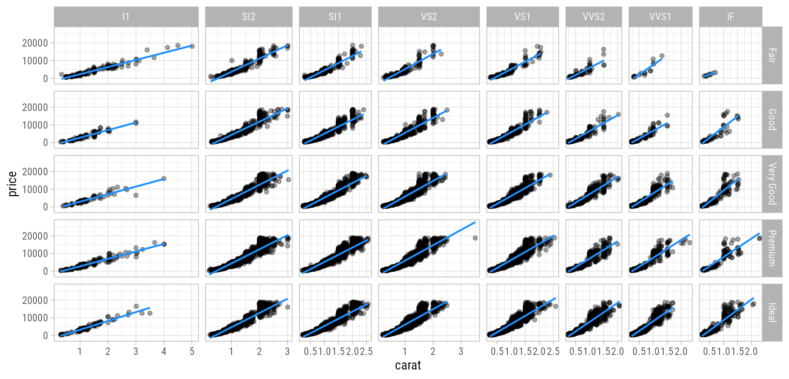
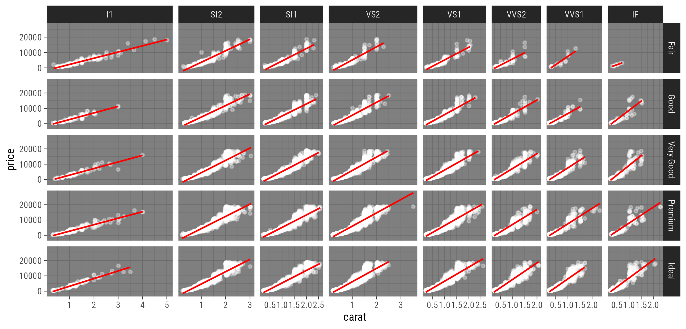
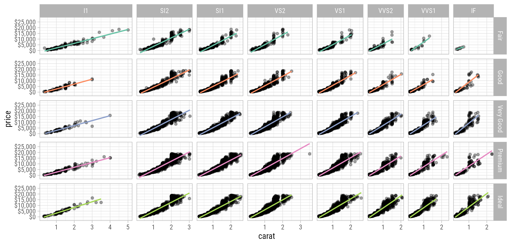

library(tidyverse)
bikes <- readr::read_csv(
here::here("data", "london-bikes-custom.csv"),
col_types = "Dcfffilllddddc"
)
bikes$season <- forcats::fct_inorder(bikes$season)
theme_set(theme_light(base_size = 14, base_family = "Roboto Condensed"))
theme_update(
panel.grid.minor = element_blank(),
plot.title = element_text(face = "bold"),
legend.position = "top",
plot.title.position = "plot"
)
invisible(Sys.setlocale("LC_TIME", "C"))Graphic Design with ggplot2
Concepts of the {ggplot2} Package Pt. 2:
Facets, Scales, and Coordinate Systems
Setup
Facets
Facets
= split variables to multiple panels
Facets are also known as:
- small multiples
- trellis graphs
- lattice plots
- conditioning


Setup
Wrapped Facets

Wrapped Facets
Facet Multiple Variables
Facet Options: Cols + Rows
Facet Options: Free Scaling
Facet Options: Free Scaling
Facet Options: Switch Labels
Gridded Facets

Gridded Facets
Facet Multiple Variables
Facet Options: Free Scaling
Facet Options: Switch Labels
Facet Options: Proportional Spacing
Facet Options: Proportional Spacing
Your Turn!
Create the following facet from the diamonds data.

Your Turn!
Bonus: Create this bloody-dark version.

Diamonds Facet
Diamonds Facet
Diamonds Facet (Dark Theme Bonus)
Scales
Scales
= translate between variable ranges and property ranges
- feels-like temperature ⇄ x
- reported bike shares ⇄ y
- season ⇄ color
- year ⇄ shape
- …
Scales
The scale_*() components control the properties of all the
aesthetic dimensions mapped to the data.
Consequently, there are scale_*() functions for all aesthetics such as:
positions via
scale_x_*()andscale_y_*()colors via
scale_color_*()andscale_fill_*()sizes via
scale_size_*()andscale_radius_*()shapes via
scale_shape_*()andscale_linetype_*()transparency via
scale_alpha_*()
Scales
The scale_*() components control the properties of all the
aesthetic dimensions mapped to the data.
The extensions (*) can be filled by e.g.:
continuous(),discrete(),reverse(),log10(),sqrt(),date()for positionscontinuous(),discrete(),manual(),gradient(),gradient2(),brewer()for colorscontinuous(),discrete(),manual(),ordinal(),area(),date()for sizescontinuous(),discrete(),manual(),ordinal()for shapescontinuous(),discrete(),manual(),ordinal(),date()for transparency

Continuous vs. Discrete in {ggplot2}
Continuous:
quantitative or numerical data
- height
- weight
- age
- counts
Discrete:
qualitative or categorical data
- species
- sex
- study sites
- age group
Continuous vs. Discrete in {ggplot2}
Continuous:
quantitative or numerical data
- height (continuous)
- weight (continuous)
- age (continuous or discrete)
- counts (discrete)
Discrete:
qualitative or categorical data
- species (nominal)
- sex (nominal)
- study site (nominal or ordinal)
- age group (ordinal)
Aesthetics + Scales
Aesthetics + Scales

Scales
Scales
Scales
`scale_x|y_continuous`
`scale_x|y_continuous`
`scale_x|y_continuous`

`scale_x|y_continuous`
`scale_x|y_continuous`
`scale_x|y_continuous`
`scale_x|y_continuous`
`scale_x|y_continuous`
`scale_x|y_continuous`
`scale_x|y_continuous`
`scale_x|y_continuous`

`scale_x|y_continuous`
`scale_x|y_date`
`scale_x|y_date`
`scale_x|y_date` with `strftime()`
`scale_x|y_date` with `strftime()`
`scale_x|y_discrete`
`scale_x|y_discrete`
Discrete or Continuous?
Discrete or Continuous?
Discrete or Continuous?
`scale_color|fill_discrete`
Inspect Assigned Colors
g <- ggplot(
bikes,
aes(x = date, y = count,
color = season)
) +
geom_point() +
scale_color_discrete(
name = "Season:",
type = c("#3ca7d9", "#1ec99b", "#F7B01B", "#bb7e8f")
)
gb <- ggplot_build(g)
gb$data[[1]][c(1:5, 200:205, 400:405), 1:5] colour x y PANEL group
1 #3ca7d9 16439 6830 1 1
2 #3ca7d9 16439 2404 1 1
3 #3ca7d9 16440 14763 1 1
4 #3ca7d9 16440 5609 1 1
5 #3ca7d9 16441 14501 1 1
200 #1ec99b 16538 8830 1 2
201 #1ec99b 16539 24019 1 2
202 #1ec99b 16539 10500 1 2
203 #1ec99b 16540 25640 1 2
204 #1ec99b 16540 11830 1 2
205 #1ec99b 16541 22216 1 2
400 #F7B01B 16638 12079 1 3
401 #F7B01B 16639 26646 1 3
402 #F7B01B 16639 12446 1 3
403 #F7B01B 16640 11312 1 3
404 #F7B01B 16640 4722 1 3
405 #F7B01B 16641 22748 1 3`scale_color|fill_discrete`
`scale_color|fill_discrete`

`scale_color|fill_discrete`
`scale_color|fill_manual`
`scale_color|fill_carto_d`
Your Turn!
Modify our diamonds facet like this:

Diamonds Facet
Diamonds Facet
facet +
scale_x_continuous(
breaks = 0:5
) +
scale_y_continuous(
limits = c(0, 30000),
breaks = 0:3*10000,
labels = c("$0", "$10,000", "$20,000", "$30,000")
)
Diamonds Facet
Diamonds Facet

Diamonds Facet

Diamonds Facet
Diamonds Facet

Coordinate Systems
Coordinate Systems
= interpret the position aesthetics
- linear coordinate systems: preserve the geometrical shapes
coord_cartesian()coord_fixed()coord_flip()
- non-linear coordinate systems: likely change the geometrical shapes
coord_polar()coord_map()andcoord_sf()coord_trans()
Cartesian Coordinate System
Cartesian Coordinate System
Changing Limits
Clipping
Clipping
… or better use {ggrepel}
Remove All Padding
Fixed Coordinate System
Flipped Coordinate System
Flipped Coordinate System


Reminder: Sort Your Bars!
Reminder: Sort Your Bars!
Circular Corrdinate System
Circular Cordinate System
Circular Corrdinate System
Circular Corrdinate System
Circular Corrdinate System


Transform a Coordinate System
Transform a Coordinate System
Recap
facet_*()functions allow to create small multiplesscale_*()functions translate betweenaesthetics and properties- use
*_continuous()for numerical data - … and
*_discrete()for categorical data - use
scale_color|fill_*()to customize data-related colors coord_*()functions interpret the positional aesthetics- e.g. create polar plots or work with spatial projections
- be careful when adjusting axis limits:
scale_*_continuous(limits)removes the data outside the rangecoord_*(*lim)keeps the data and zooms into the range
Exercises
Exercise 1
- Have a look at the following visualization of the cumulative time that cosmo- and astronauts have spent in outer space. The data also contains information on the year of their first and last travel, respectively.
- Together with your group, discuss which layers and modifications are needed to create such a chart with
{ggplot2}. - Note down the aesthetics, geometries, and scales used for each element of this graphic.
- What is the coordinate system? Have any adjustments been made?
- Which theme was used and how was it modified?
Exercise 2
- Create a circular lollipop plot of reported bike shares per season.
- The data is not in the right format as there are no totals.
How can you solve it? - Remove all legend elements (with a single line of code).
- How can you add the labels next to the starting point of each lollipop?
- How could you add a baseline?
Appendix
Spatial Coordinate (Reference) Systems
Spatial Coordinate (Reference) Systems
Spatial Coordinate (Reference) Systems
Spatial Coordinate (Reference) Systems
oceans <- rnaturalearth::ne_download(
category = "physical", type = "ocean", returnclass = "sf"
)OGR data source with driver: ESRI Shapefile
Source: "C:\Users\DataVizard\AppData\Local\Temp\RtmpuafHtE", layer: "ne_110m_ocean"
with 2 features
It has 3 fieldsSpatial Coordinate (Reference) Systems
Mapping of Visual Properties
Better Borders
borders <- rmapshaper::ms_innerlines(countries)
ggplot() +
geom_sf(
data = oceans,
fill = "#d8f1f6",
color = "white"
) +
geom_sf(
data = countries,
aes(fill = economy),
color = "transparent"
) +
geom_sf(
data = borders,
fill = "transparent",
color = "white",
size = .3
) +
coord_sf(
crs = "+proj=bonne +lat_1=10"
) +
scale_fill_viridis_d(option = "magma") +
theme_void() +
theme(legend.position = "top")